| 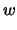 | ||
| 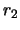 | ||
| 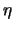 | ||
| 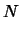 |
Antoine Lefebvre
The design of solid propellant grain that provide neutral burning is important to optimize rocket motor performance. The star configuration have been widely used to achieve this goal. In this report, I will present an analysis of the burning comportement of star shape as well as parameter recommandation to achieve better performance.
The star could be characterize by seven independant variable as defined in figure 2. As every star points are identical, only one is necessary for the analysis.
| 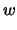 | ||
| 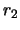 | ||
| 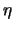 | ||
| 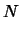 |
In this section, an expression for the perimeter of the star will be developp for each burning zone as a function of the web thickness burned (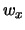).
The perimeter in the zone one could be divide in three
sections. Starting by the right, we have the section before the
radius 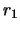, which have a radius equal to 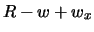. The length of
this section is then:
 .
.
Then, we have the perimeter of the arc of initial radius . The
angle will remain constant to  . The length is then:
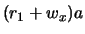.
. The length is then:
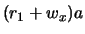.
The third section is more complicated. The lenght of the line
starting at the end of the radius and crossing the vertical
line will be evaluated first. Then, the perimeter of the radius
 will be add to the result, and the length of the line starting
at the beginning of the radius will be substract.
will be add to the result, and the length of the line starting
at the beginning of the radius will be substract.
In order to determine the length, refer to the figure 3. The lenght we are looking for will be equal 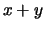.
| 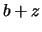 | 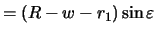 | |
| 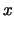 | 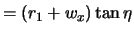 | |
| 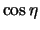 | 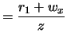 | |
| 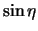 | 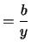 | |
| 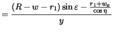 | ||
| 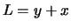 |  |
We could now simplify this equation using two trigonometric identity:
| 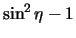 | 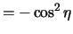 | |
| 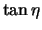 | 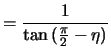 |
| 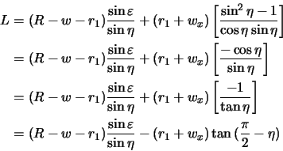 | (1) |
We could now determine the length of the arc and how much we should substract from the length L. Refer to figure 4 for the variables.
We have now the complete expression of the perimeter of the star as a function of web burned () in the zone one. This expression is valid for 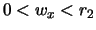.
| 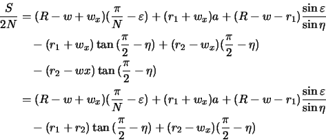 | (2) |
We could now determined the first derivative of this expression to evaluate if it is progressive, regressive or neutral.
| 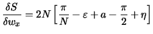 | (3) |
We could verify that:
Our expression become:
| 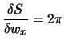 | (4) |
The perimeter in zone 1 will always be progressive. So, it is
important to minimize the radius  in order to switch as fast as
possible to the zone 2.
in order to switch as fast as
possible to the zone 2.
The expression for the perimeter in the second zone is almost the
same as in the zone one. The difference is that the radius  had
vanish and the expression reduce to a simpler one:
had
vanish and the expression reduce to a simpler one:
| 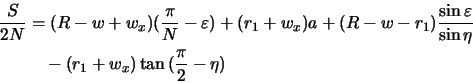 | (5) |
The derivative of this expression is:
| 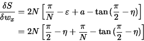 | (6) |
As we could see in this expression, the progressivity in zone 2 is
determined by the angle  and by the number of star point
and by the number of star point
 . It is independant of the angle
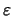.
. It is independant of the angle
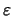.
The zone 2 will be predominant during the motor burn time and we would like to provide neutrallity in this zone. Neutrality is obtain when the derivative of the perimeter is equal to zero. This lead to the following equation:
 |
(7) |
Which reduce to the following implicit equation of  as a
function of
as a
function of  :
:
| 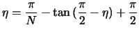 | (8) |
Solution of this equation give values of the angle  to obtain
neutrality in zone 2 as a function of the number of star points.
to obtain
neutrality in zone 2 as a function of the number of star points.
| 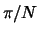 (deg) | ||
| 3 | 24.55 | 60.00 |
| 4 | 28.22 | 45.00 |
| 5 | 31.13 | 36.00 |
| 6 | 33.53 | 30.00 |
| 7 | 35.56 | 25.71 |
| 8 | 37.31 | 22.50 |
| 9 | 38.84 | 20.00 |
It is important to note that when the angle 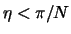, a secant fillet 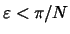 will be necessary to prevent star point from overlapping. In general, should always be smaller that .
The perimeter in the zone 3 begin when 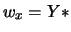. The angle  become progressivly smaller when propellant burned. Perimeter could
be expressed like this:
become progressivly smaller when propellant burned. Perimeter could
be expressed like this:
![$\displaystyle \frac{S}{2N} = (R-w+w_x)(\frac{\pi}{N}-\varepsilon) + (r_1+w_x)\left[ \varepsilon + \arcsin{(\frac{R-w-r_1}{r_1+w_x}\sin{\varepsilon}}) \right]$](img56.gif) |
(9) |
The derivative of this expression become:
| 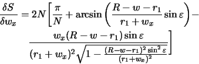 | (10) |
It could be demonstrate that the perimeter is progressive in this section. It would be interesting to eliminate the zone 3 in order to keep neutrality as long as possible.
The condition for the elimination of zone 3 is:
| 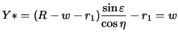 | (11) |
This equation reduce to:
| 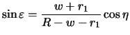 | (12) |
Now, the angle
is determine by the web thickness 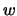,
the radius and the angle  . As
. As  was determine by
the number of star points
was determine by
the number of star points  and the radius may be dictate by
technical decision, the web thickness will determine
.
and the radius may be dictate by
technical decision, the web thickness will determine
.
The analytical solution of the perimeter in the zone 4 could be found with the help of the cosinus law:
| 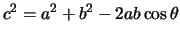 |
The perimeter is then:
| 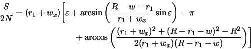 | (13) |
In this section, a star configuration will be design with the theory developp in the previous sections for a motor of internal diameter.
The goal is to have a perimeter that will remain as constant as possible to mainatin neutrality. It will also be interesting to minimize the number of star points in order to reduce the difficulty to cast the propellant. We could also try to optimize the volumetric loading.
First of all, we could determine the number of star points. In order
to maximize the quantity of matter, the angle
should
be equal to . In order to obtain this condition, the angle
 should be larger than .
should be larger than .
If we refer to the table of the angle  in function of
in function of  , to
obtain neutrality in zone 2, we must choose to have
.
, to
obtain neutrality in zone 2, we must choose to have
.
Three conditions are now determine:
We must now found the web thickness and radius that fit the conditions. A radius is reasonable technically.
The equation to be solve is the following:
The value of that solve this equation is:
The seven independant variable are now fixed. The resulting shape could be seen in figure 5.
With the functions developp in the report, the evolution of the perimeter as a function of the web burned could be plot.
The star configuration offer the possibility to design rocket motor that works at almost constant pressure. It is then possible to optimize on case thickness and throat diameter in order to obtain the best performance.
This document was generated using the LaTeX2HTML translator Version 99.2beta8 (1.42)
Copyright © 1993, 1994, 1995, 1996,
Nikos Drakos,
Computer Based Learning Unit, University of Leeds.
Copyright © 1997, 1998, 1999,
Ross Moore,
Mathematics Department, Macquarie University, Sydney.
The command line arguments were:
latex2html -white -image_type gif -no_navigation -split 0 -dir html -mkdir star.tex
The translation was initiated by Antoine Lefebvre on 2001-07-12